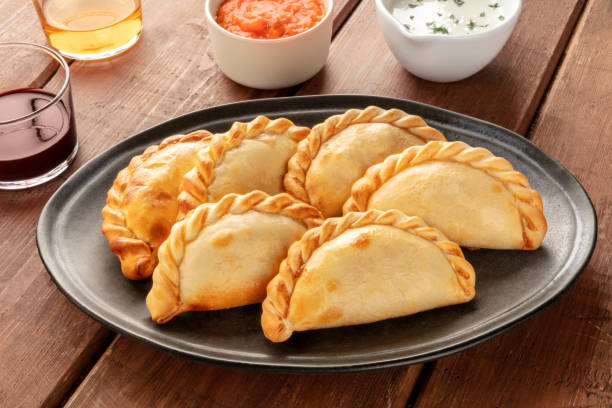

Tienes que probar estas riquisimas resetas si vienes de visita a la Argentina
ALGUNAS RECETAS TIPICAS
EMPANADAS
ASADO
MILANESA NAPOLITANA
Estas son solo algunas de las recetas argentinas por su pueto la gastronomia argentina no se detiene en esta corta lista
EMPANADAS
UN dato importante es que no ahy solo una receta de ampanadas si no que al rededor del pais existes mas de 5 tipos de recetas
la receta va cambiando segun la provincia . tucumanas , salteñas , jujeñas etc...
Esta receta que vas a leer es vasicamenrte la base se toda empanada de ahy em mas la imaginacion es el limite como avitualmente se dice
en fin AL ASUNTO DE LA CUESTION espero sea de tu agrado...

modo de preparacion
INGREDIENTES
VERDURAS:
cebolla, morron verde y rojo, perejir, cebollita verdeo,
CARNES :
aka depende del corte que mas te juste por lo general se puede hacer pon un poco de paleta
MASA (ojo no sergio masa...) :
harina, huevo sal grasa ,aceite o manteca, agua
CONDIMENTOS:
comino , horegano , ajo pimenton colorado
paso 1
colocar en una sarten un poquito de aceite i las verduras correspondientes para sofreir
cuando este a punto o bien fritas las verduras colocar la carne previamente contados en cubitos al cuchillo
cocinar bien hasta que este la carne bien cocida,colocar los condimentos i la sal a gusto ,
en una holla colocar a hervir huevo con sal ,
luego de que esten cocidos dejalos enfriar
bien ya tenemos el relleno i los huevos
paso 2
picar el perejir i la cebollita de verdeo
paso 3
preparacion de la masa : colocar el un bols la harina
la sal junto con el componente graso que elejiste (grasa manteca o aceite)
colocar agua i amasar asta obtener una masa lisa i firme
dejala descansar unos minutos hace unos bollitos i estira la masa
paso 3
colocar el huevo picado en el relleno i tambien el perejir picado con la cebollita
mesclar bien ...
paso 4
con una cuchara colocar el relleno en la masa para cerrarlo i haces el repulgue
colocar haceite en un sarten i freir... i LISTO A DISFRUTAR DE LA EMPANADAS...
El tipico Asado ARGENTINO
buen le toca el turno a una de las comida insignia de este hermoso pais
bueno esta receta depende mucho de los cortes que quieras asar pero
por lo general siempre se prepara i sasona los cortes 1 dia antes si se puede
eN EL PROCESO se obta por acompañarlo con un poco de fernet o vino con coca....
PASO 1
seleccionar bien los cortes los tipicos son costillita .falda . matambre .asado. choriso etc...
PASO 2
sasonar bien la carne con sal chimichurri(una mescla de aceite, probensal , aji molido horegano i ajo)
dejarlo por aproximadamente 6 horas en la eladera o asta que los cortes esten bien sasonados
PASO 3
preparar la parrilla el fuego colocar los cortes i coserlos al punto que quieras...
listo YA TIENES TU ASDADO COMO TODO UN PARRILLERO PROFESIONAL...
MILANESA NAPOLITANA
bueno ahora hablemos de unos de mis platos favoritos y por supueto que al mejor jugador del mundo LEONEL MESSITAMBIEN le resulta favorito estoy hablando de la milanesa napolitana
LA milanesa napolitana se puede hacer con carne de res o pollo , tambien aunque no es muy comun
podes elejir hacerla con cerdo. en este caso vamos por la de pollo
PASO 1
primero cortar la pechuga del pollo condimentar con sal i pimienta al gusto
pasarla por harina despues por huevo vatido para posteriormente pasarla por pan rallado repite este proceso
asta obtener una milanesa bien rebosada
PASO 2
coloca una sarten con aceite i frie la milanesa asta dorarla como a vos mas te guste
PASO 3
preparemos una salsa roja con cebolla tomate o pure de tomate en su defecto
luego coloca la milanesa en un recipiente para horno coloca la salsa roja
PASO 4
colocale queso musarella o el queso de tu preferencia luego opcionalmente
coloca 2 o 3 rodajas de tomate espolvorea el oregano
PASO 5
COLOCA la milanesa en el horno (el horno debe estar precalentado) cocinalo asta que se derrita el queso
i listo YA TIENES TU MILANESA NAPOLITANA...
acompañalas si quieres con papas fritas aunque yo prefiero un pure mixto como acompañamiento...